Obamium? What?
Yeah, so I chose this name because I named my car obamacar. You can see its instagram page here if you want, I don't post often.
This is going to require context
The Death of Obamacar
In summary, I own a 2008 Lexus RX 350 AWD, in maroon, aka Brandywine Mica. Here's a photo:

It's a reliable Lexus. Unfortunately, while driving to the ACT, the alternator broke. During one of the most important tests. Wonderful
Anyways, after repairing it, I had a sudden sense of connection with my car, as I didn't have any experience with any car repair beforehand. Not even an oil change by myself. Therefore, it needed a name, and obamacar was chosen.
The real reason is because there were these memes of Obama Prism floating around at the time, called obamium. That's why remote start is called obamium.
Starting Obamium
In November 2019, I got the idea to make my own remote start. How hard could it be? All I had to do was figure out how to make obamacar think that a key is inserted and turning, right?
Right!
Probing Around
I still have a folder on my desktop all these years later containing various wiring diagrams I found online about obamacar's ignition lock cylinder wiring. Here's an extremely important one:
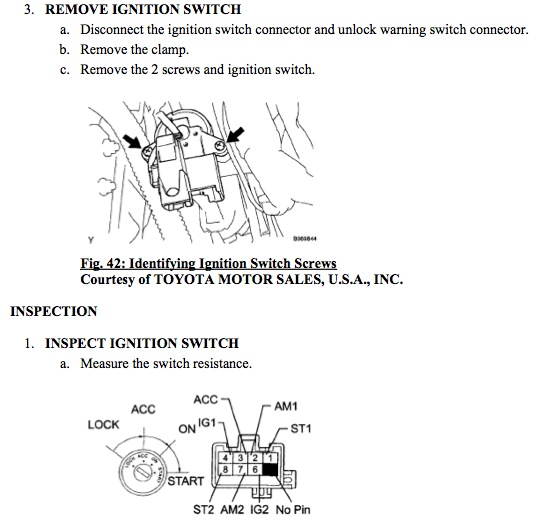
This photo was instrumental to figuring out how to start. I found out that AM1 and AM2 are both always-on 12V sources, with IG1 and ST1 being low-current relay inputs that connect to AM1, while ST2 is a higher current input from the high current AM2 supply, with thick wires. IG2 is low enough current to be controlled with IG1 as well.
While figuring this out, I also busted a fuse when everything was on a breadboard, connecting AM1 to GND, and I had no spare fuses. I had to get a friend's dad to drive me to robotics that night, at least he was proud because he found out the reason why my car broke down was because I was making remote start.
Making a Wiring Harness
In the super chilly November night, I pushed wires into the existing connector in order to have contacts. I then soldered these to some automotive connectors I found off eBay so that I could have a wiring harness. Yes, I soldered to a wiring harness, this is a sin, but I don't have crimp for it. I'm using solid core wire anyways, it's not like this thing is built to last the life of obamacar!
In the end, I had 2 connectors with the pinouts when combined:
- AM1 12V source (low current)
- GND
- Key Detect (active low)
- Ignition (active high)
- AM2 12V source (high current)
- Starter Relay (needs high current, used another relay to switch this to AM2)
- Accessory Power (active high)
- Trunk (now defunct)
I added the trunk opener because I didn't have an actual key fob with lock/unlock until nearly a year later.
Obamium, the Game Plan
So we had to do the following:
- Receive an RF signal from a fob to start obamacar
- Save the current battery voltage
- Make obamacar think that a key is inserted. Being a Lexus, the steering wheel comes out to your preferred position when the key is inserted, and it will not come out if you somehow start the car before inserting the key, because that is physically impossible under normal circumstances. We are not normal circumstances, so we must emulate this
- We also NEED this because when the key is inserted, that's when obamacar authenticates the transponder with the ECU in order to allow starting. Without this, the fuel pump never turns on, and we crank infinitely! Definitely do not let this happen
- Wait about 250 milliseconds
- Switch the key to ignition. Lets the ECU boot up, even for a split second. It'll be fine
- Wait, or don't. You don't really have to wait considering you can turn your key extremely fast and still start fine.
- Switch the key to start as well. Remember, you must have ignition and start both on at the same time.
- When the battery voltage exceeds previous, we have started. Start waiting.
- If it doesn't go above the previous voltage in 3 seconds, we failed to start. Reset, take the key out, and return to normal.
- When we see that the accessory power has been turned on, we know a physical key has been turned, so wait 500 milliseconds and turn off. Hand off control back to the user
10 easy steps to remote start my car!
The First Prototype
The excitement I had when this actually worked.
I used the following to complete this:
- Adafruit 4-Button Key Fob and its momentary receiver
- Arduino Nano
- Generic 5V Relays
- Some perfboard that I ordered off eBay
- Those automotive connectors I talked about earlier for connecting to my DIY 8 pin wiring harness
- A big old automotive 40 amp relay, because the starter relay needs a lot of current to switch itself on. Ironic, a relay switching another relay
This was an incredibly simple proof-of-concept. Here's a photo of the very first version, Obamium v1, on perfboard:
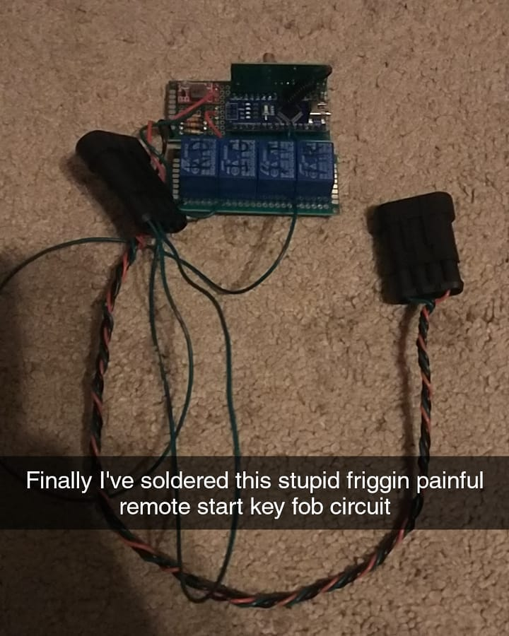
I was very unprofessional on my Snapchat story.
Unfortunately, I can't insert videos in Joomla, so you're just going to have to imagine a video version of this with audio. The first remote start, December 18, 2019. At least, the first video.
I should mention at this point that all software is written in C, of course, with the normal Arduino IDE.
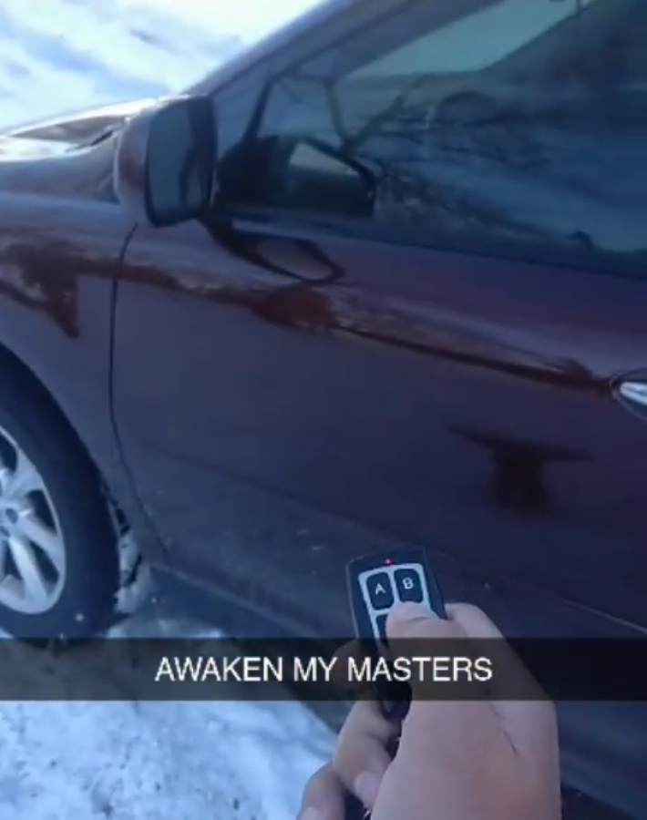
This was an amazing feeling.
Moving On
I made remote start!
And I broke it when trying to wrap it in duct tape to put in my dash, so I threw it away!
Time to start over...
Version 2
I wanted to add the ESP32 as well, a microcontroller with WiFi so that I can spend the little time I have in school connecting obamacar to the school WiFi and start from my phone. Cool, right?
I decided that after watching many GreatScott videos and hearing his sponsorships about JLCPCB, I can give JLC a try with a custom PCB. Here's my result after a couple days of figuring out how all this works:
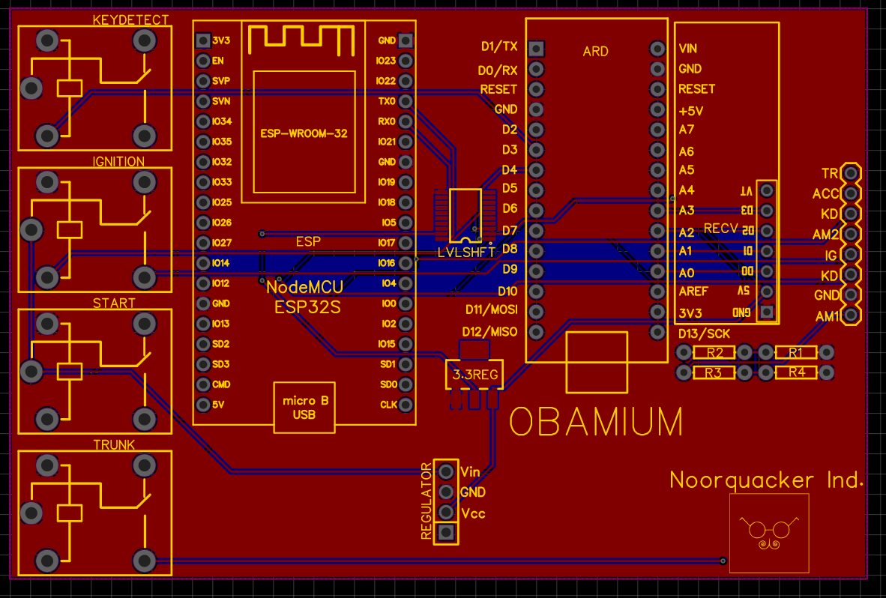
Not bad! And now we can make it real...
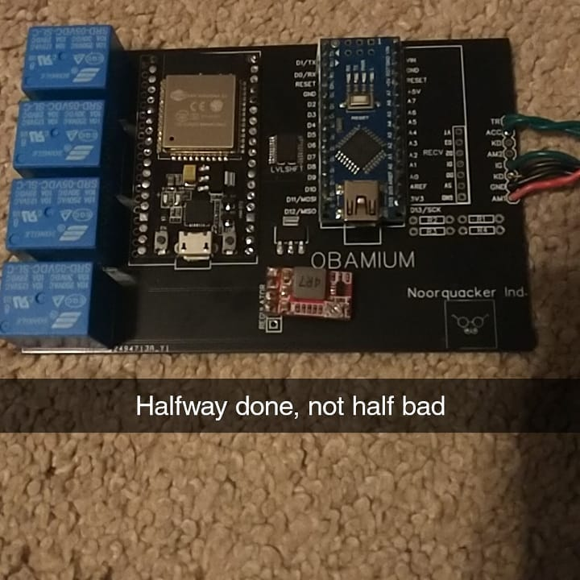
Almost there...
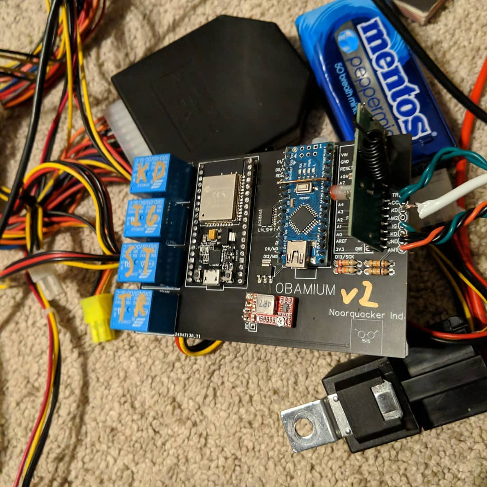
Finally, January 10, 2020, I had Version 2 soldered.
Finished?
Yep! Successfully wired to the harness with the relay as well, ready to throw in obamacar, and it worked. The code is the same as Obamium v1.
However, I had some issues that I don't have photos of, such as directly driving 40mA relays with a 30mA-max Arduino Nano. Whoops. I ended up making a mess of transistors and stuff underneath, so it worked out.
Unfortunately, I didn't end up using the ESP32 because I couldn't get it to talk over UART with the Arduino. Yes, I used the TXB0108 bi-directional level shifter, but for some reason it gives me problems, so I removed it.
Finished! Except it broke in around June 2020, during quarantine. I didn't drive anymore, so I saw no reason to fix it.
Version 3?
Okay, it's May 2021, I barely drive because quarantine and online school, I got through winter without remote start fine, I don't care, so why did I make version 3? Heheheh, you see, I got asked out to prom, and I had a month to make obamacar the best car ever. This included remote start.
Alright, Version 3 Goals!
I wanted the following:
- My own AVR wiring, I don't want to have an Arduino showing up like an eyesore
- Communication over the LoRa protocol for infinite range
- A header for future expansion, if I add an ESP32 down the line
- No more clacky relays! Use MOSFETs instead
- More SMD soldering
- Onboard 12V to 5V switching regulator
So I had until June 11 to get this done.
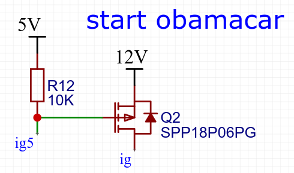
After many mistakes such as this, that I found out on the fourth version, I made something:
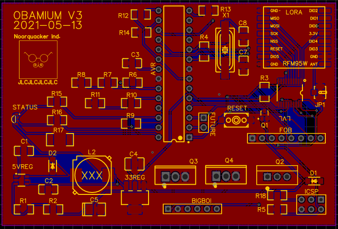
The entire thing was made in 2 days. Yeah. I messed up a bunch. Didn't realize the status LED was so small and didn't realize the TXB0108 level shifter is strangely problematic.
Anyways, LoRa also needs someone on the other side, so I made a transceiver for talking between my phone and another LoRa communication module:
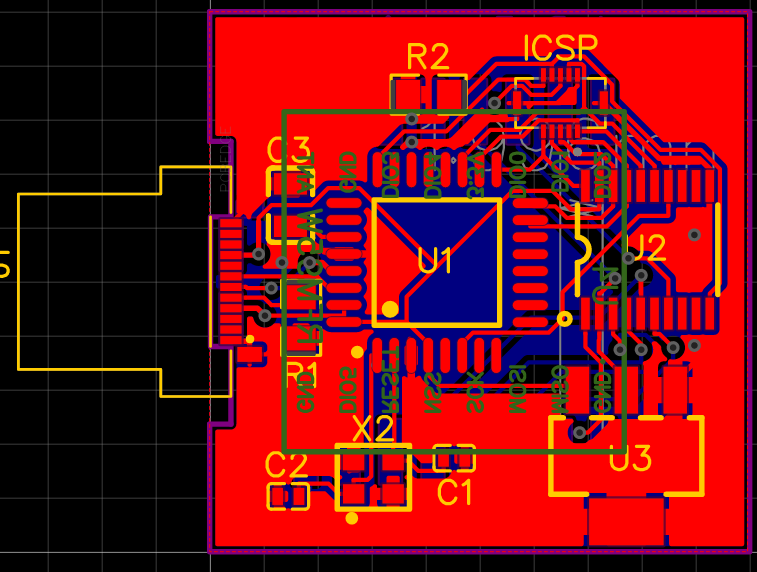
Unfortunately, since the main Obamium v3 pcb didn't work, I never made the fob, so that was sad. The AVR never responded to my USBtiny ISP programmer.
In layman's terms, computer no talk to controller so controller bad :(
I also had a week to do all of this until prom day, so I decided to abandon this. Sadly, Obamium v3 didn't work, but I eventually learned that the TXB0108 was causing issues. Desoldering it worked, but I found that out nearly a year later.
Version 4?
Okay, why am I going to mess up again? I already sank money into Obamium v3 only to watch it fail, how do I know I'm not going to make the same mistake?
Jokes aside, the failure of Obamium v3 was holding me back from doing it again because I felt like I didn't know what I was doing anymore.
Fixing my Mistakes
In Obamium v3, we had some issues:
- AVR would not respond to my USBtinyISP when placed into Obamium's PCB. It was socketed and made to swap with the Arduino Uno, but it would work in an Uno and not in Obamium.
- I could never figure out LoRa. I had some spare chips that I bought for testing it out, but all the example scripts kept failing to initialize the LoRa modules.
- I forgot to put on a USB port for debugging over serial to my phone, whoops.
- I didn't mark the pins on the connector that goes to the wiring harness. Since I'm wiring that by hand, it'd be nice to have silkscreen markings about which pin does what, so I don't have to reference the original schematic.
- Not enough exposed pads for debugging! I liked how on my old OnePlus 3 phone, there were exposed pads for the battery input so I could solder my own DC-DC power supply to it as a battery emulator, so I wanted the same thing on Obamium v4.
Most of these came down to rushing the project. Eventually, though, I got there.
I decided that to overcome these, I would get rid of LoRa and also use the Arduino Nano Every. It's an Arduino Nano that has features that I don't really care about other than castellated pins on the side, meaning I can solder straight to the PCB instead of putting headers through 2 boards and having them stick out a bunch.
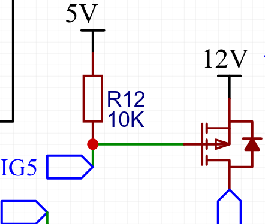
Yet I still made the mistake of trying to drive a 12V P-channel MOSFET with 5V.
Anyways, I finished and got my PCBs ordered and arrived.
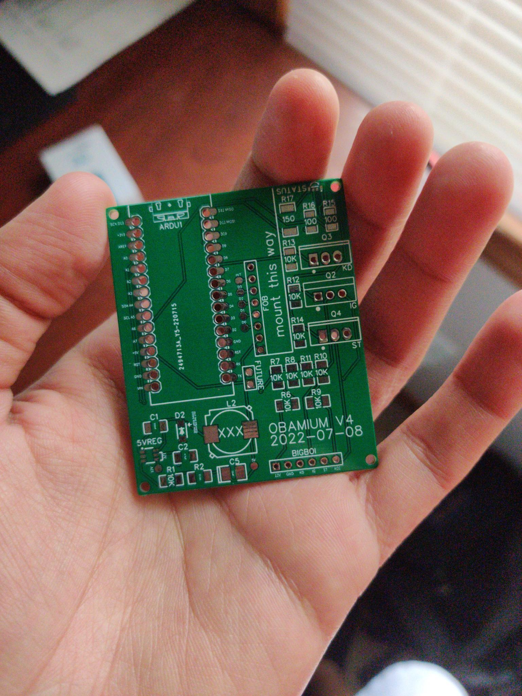
Look at it, it's so fancy!
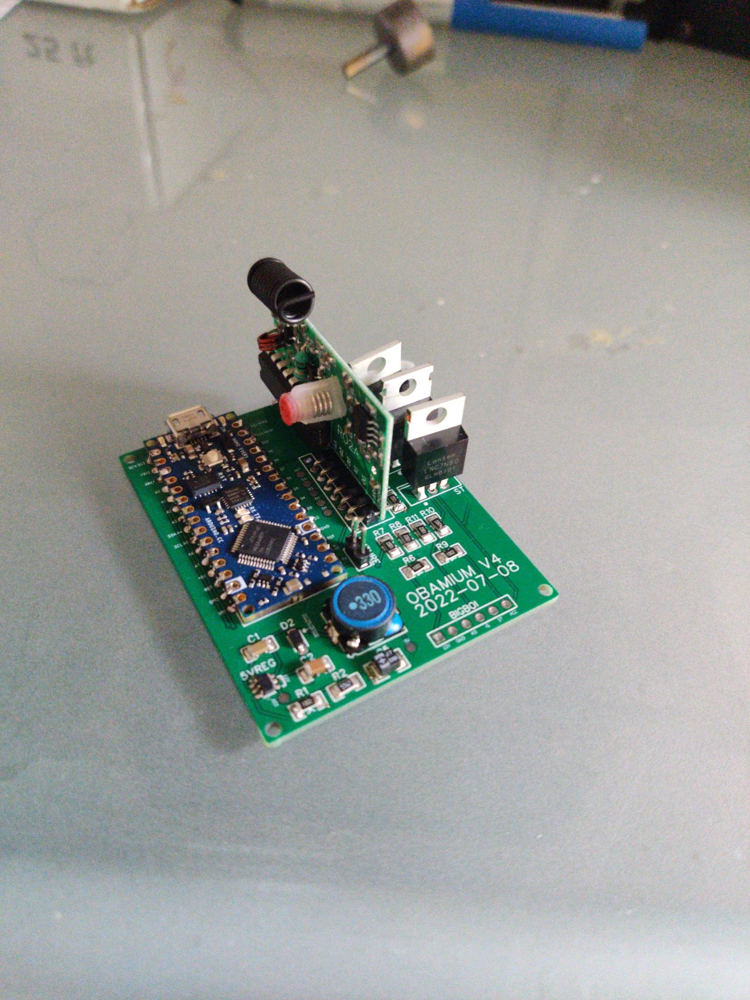
After not that much soldering and trying not to destroy it, I was done!
Except the good old driving-a-12V-P-channel-MOSFET-with-5V mistake came to bite me in the back. So I did what I had to and used my X-Acto to cut a trace and started to solder up a diode (for inductive spiking, actually, with the starter relay) and an N-channel BJT for actually driving the MOSFET, with a pullup resistor to 12V. That way it switches the MOSFET gate between 12V and GND, which is correct.
But this was ugly.
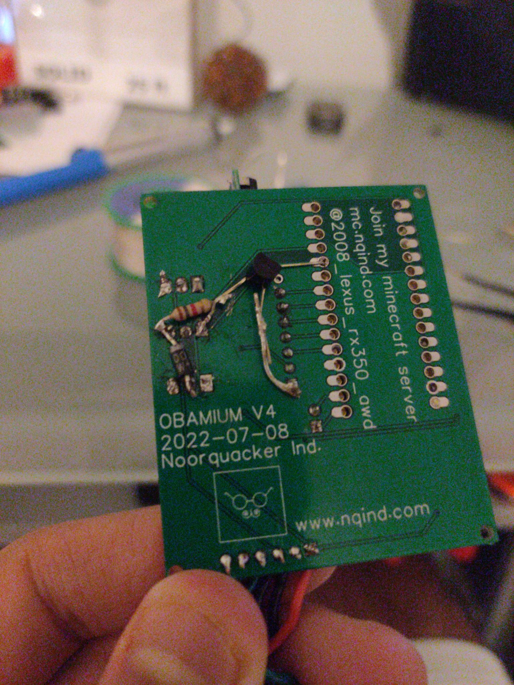
It ain't stupid if it works!
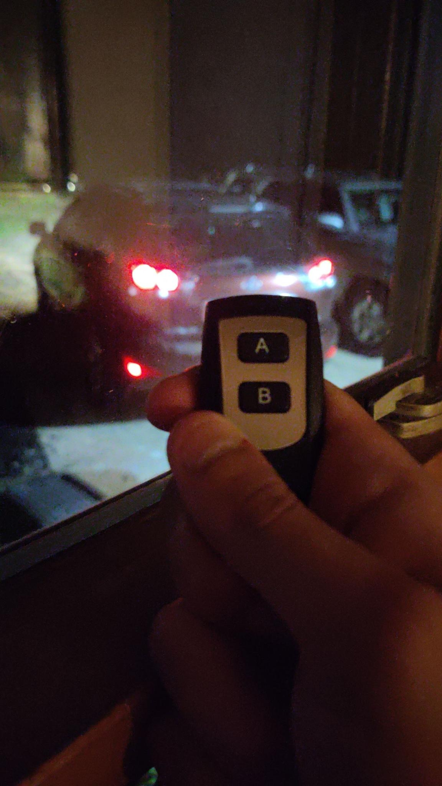
And it does work.
On August 2, 2022, Obamium came back. And it's here to stay.
Version 5?
On April 25, 2023, obamacar was rear ended and totaled. Don't use your phone while driving in rush hour traffic. Now I have a 2009 Toyota Camry with a push start key fob, and work towards remote start started in July 2023.
On December 27, 2023, a prototype with a breadboard and ESP32-C3 successfully started my car over WiFi. Soon, LoRa will become a possibility.